A卡刷BIOS
简介
前几天在海鲜市场是买了一张迪兰的HD7870，等了好几天，到手后感觉BIOS不太对劲，感觉BIOS好像被改过，于是就自己动手刷BIOS了。
刷第一次BIOS的时候是正常的，后面想着刷一个高频率的试试看，刷进去了之后在启动就启动不了，启动黑屏了，在网上找了很多教程，什么盲刷啊之类的，都没有成功，后面和朋友借了一个编程器才刷回来。
今天就分析一下用电脑刷A卡BIOS，编程器后面在写吧
刷BIOS有风险，请小心谨慎。
开始
工具下载
我们要用的工具有GPU-Z和AMD VBFlash / ATI ATIFlash，这两个工具可以在TechPowerUp上下载。
GPU-Z下载与安装
首先打开TechPowerUp网站，然后点击【DOWNLOADS】，这里面就有工具下载了。
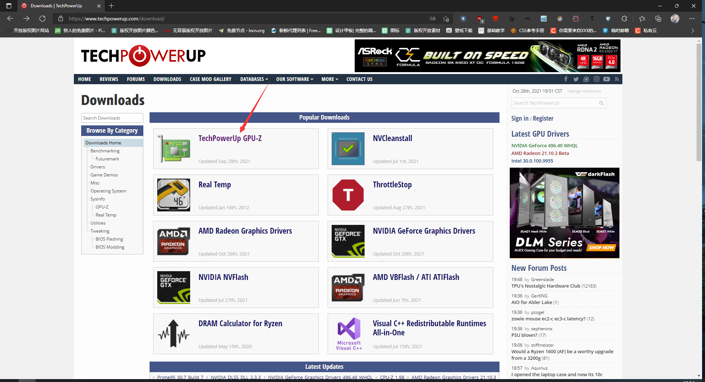
点击我们需要下载的工具，打开下载界面，然后点击【Download】进行下载
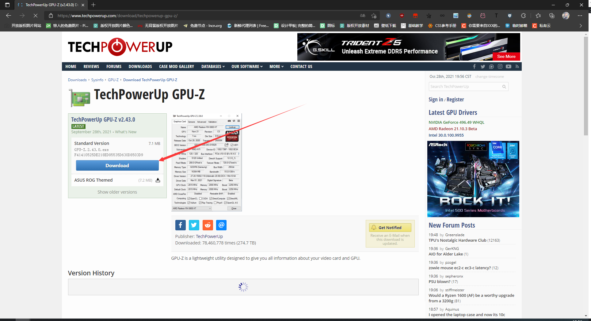
随便选择一个下载地址进行下载，一般都是直接选择第一个下载地址下载
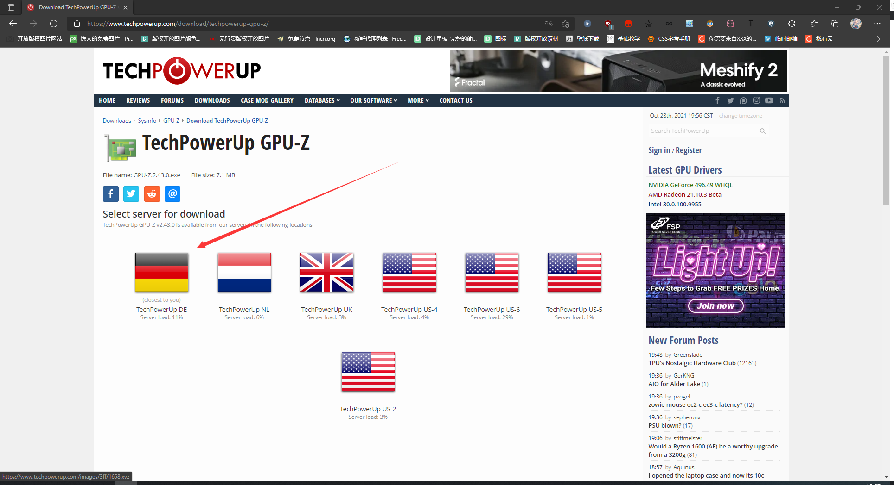
下载完成后安装工具

可以修改安装路径，如果不介意软件装C盘可以直接下一步，修改好安装路径后一直点击下一步开始安装
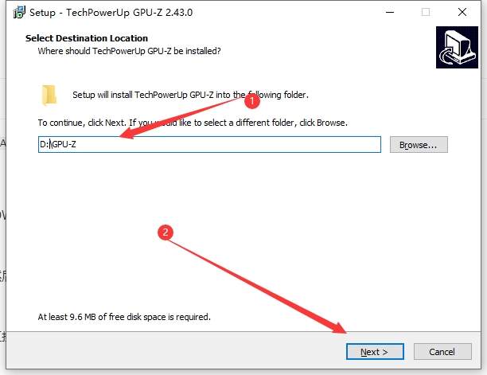
AMD VBFlash / ATI ATIFlash下载
用同样的方法下载AMD VBFlash / ATI ATIFlash，这个网站提供的是最新的版本，最新的版本不能使用命令强刷了，必须要BIOS的ID匹配才可以刷，如果需要强刷的话我推荐自己找一下2.93的版本。
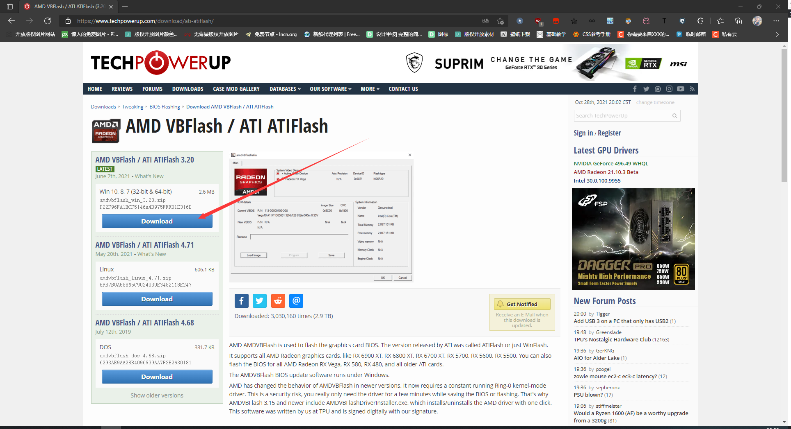
同样的，选择下载地址，然后开始下载
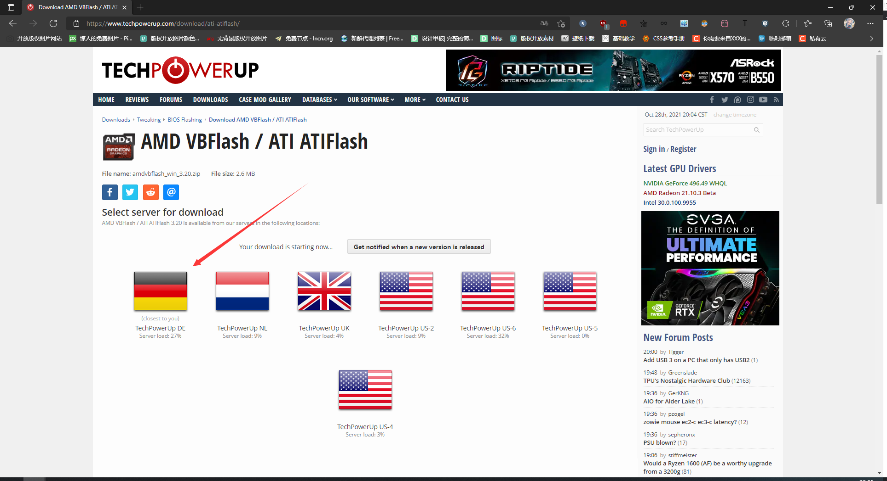
下载完成后解压下载下载的压缩包，打开解压后的文件夹，先运行AMDVBFlashDriverInstaller.exe这个驱动文件
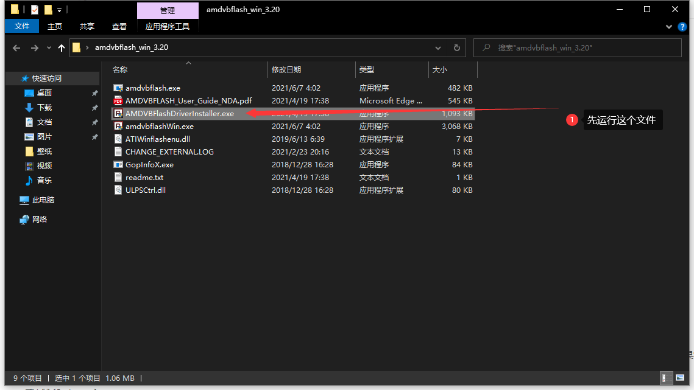
输入【i】进行安装
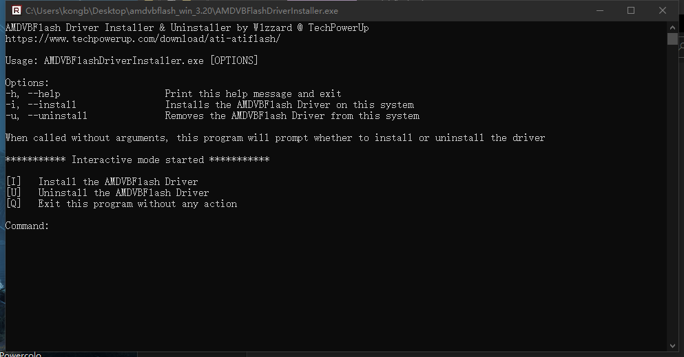
下载BIOS
打开TechPowerUp，也就是刚刚下载工具的网站，然后选中【DATABASES】下的【VGA BIOS COLLECTION】
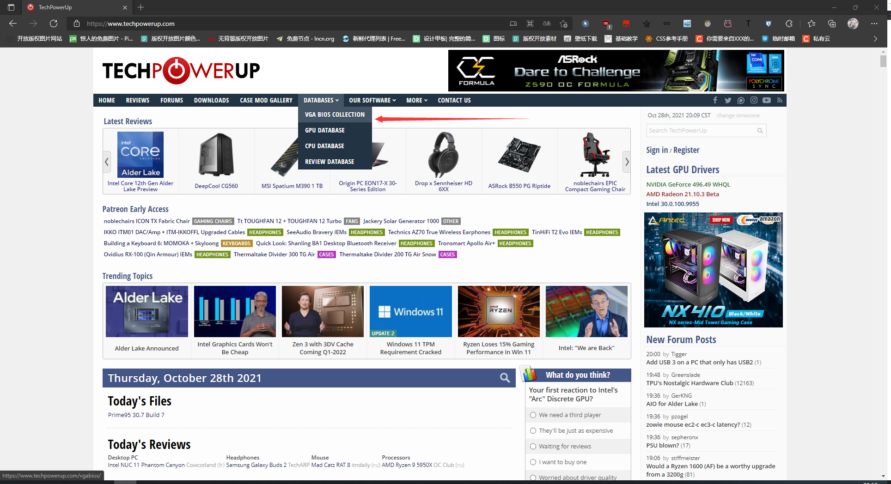
然后更加自己的显卡型号选择筛选条件
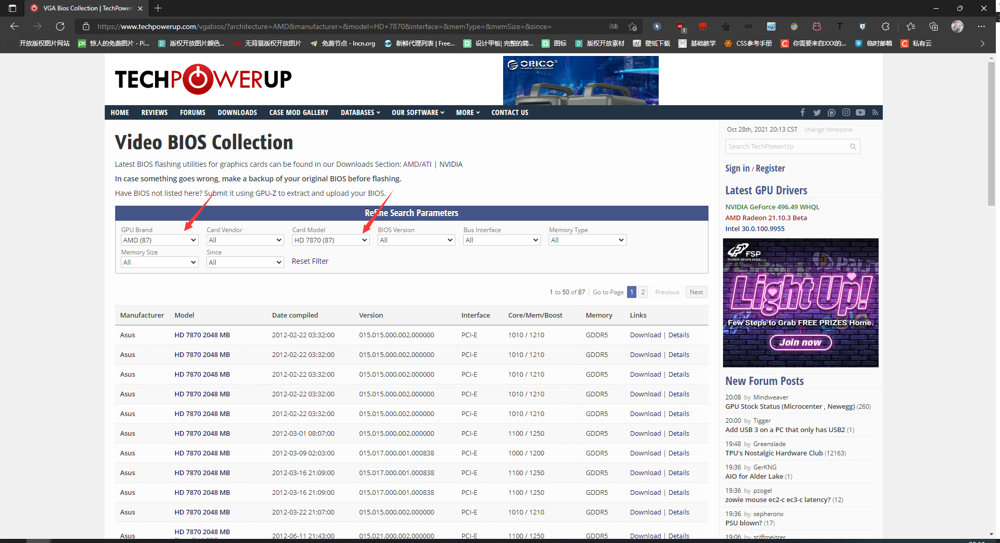
筛选出来的同一型号的BIOS有很多，这时候打开GPU-Z，更加GPU-Z显示的信息查找和显卡对应的BIOS，主要是看自己的显存和接口类型
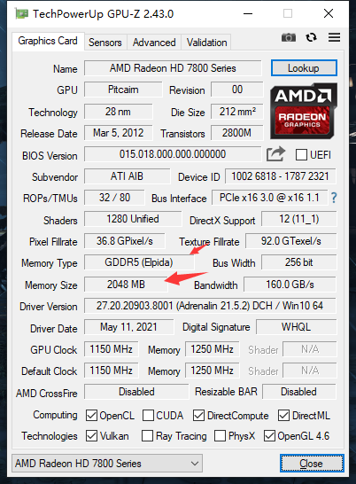
找到自己的BIOS，然后点击型号进入下载界面，点击【Download Now】进行下载。
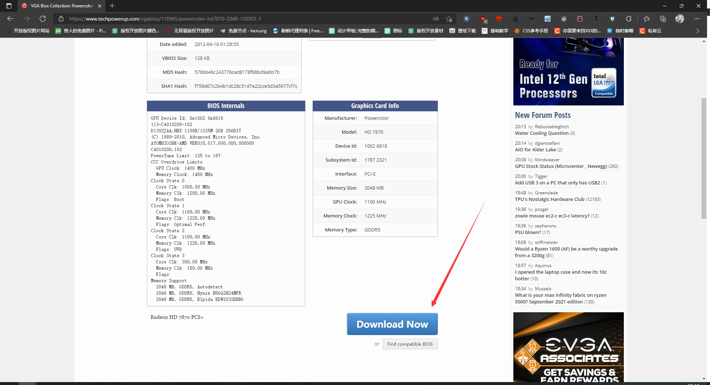
备份BIOS
打开GPU-Z，点击【分享】图标，选择【save to file…】备份自己现在可以正常启动的BIOS
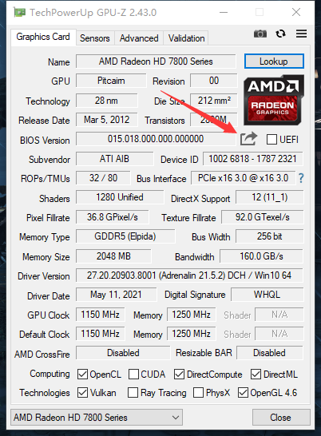
选择文件的保存路径，命名一个自己可以知道是备份的文件名，然后点击【保存】
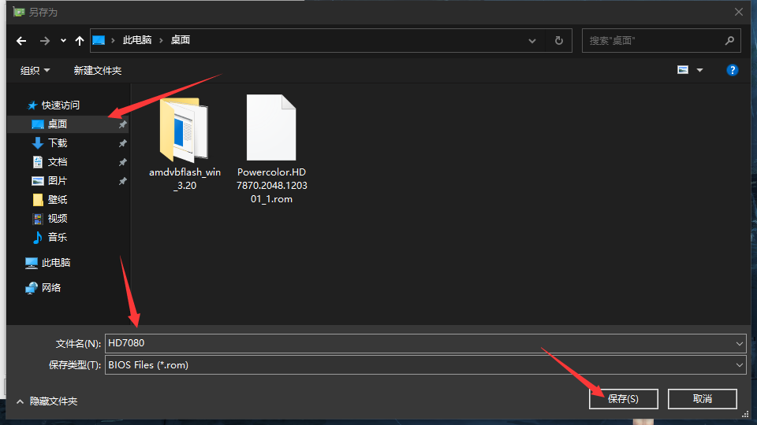
刷入新BIOS
打开刚刚解压出来的文件夹，双击amdvbflashWin.exe，运行工具
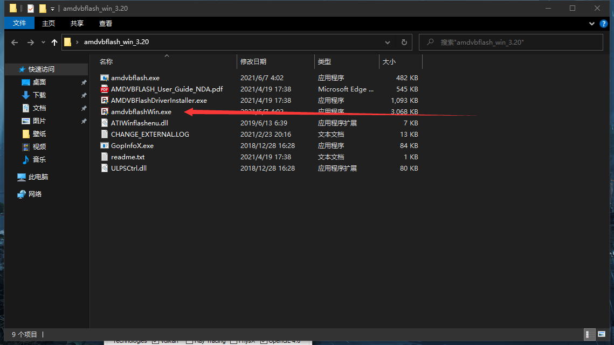
点击【Load Image】
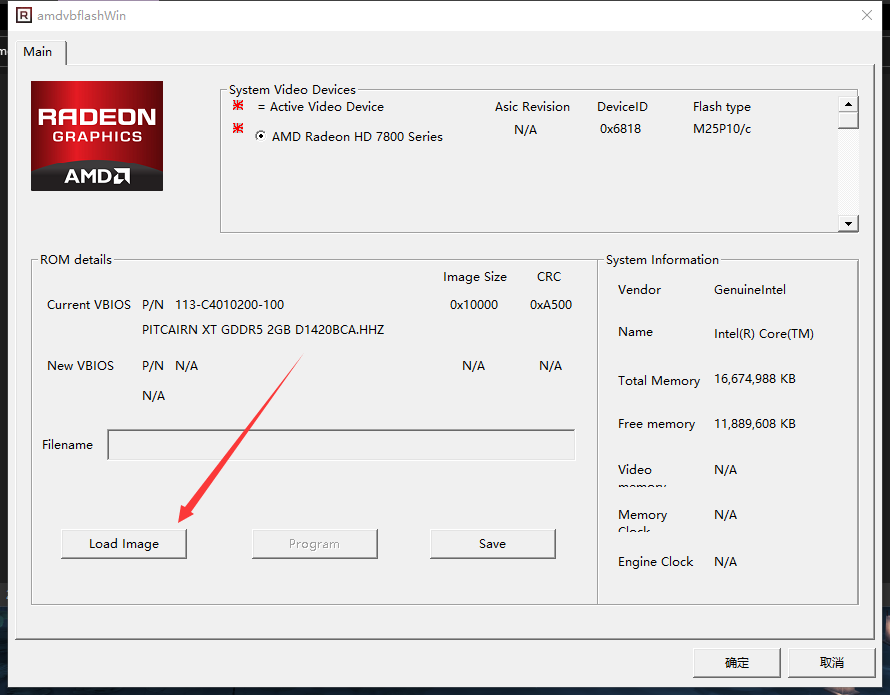
在弹出来的窗口中选中刚刚下载的BIOS，并且点击【打开】按钮加载固件
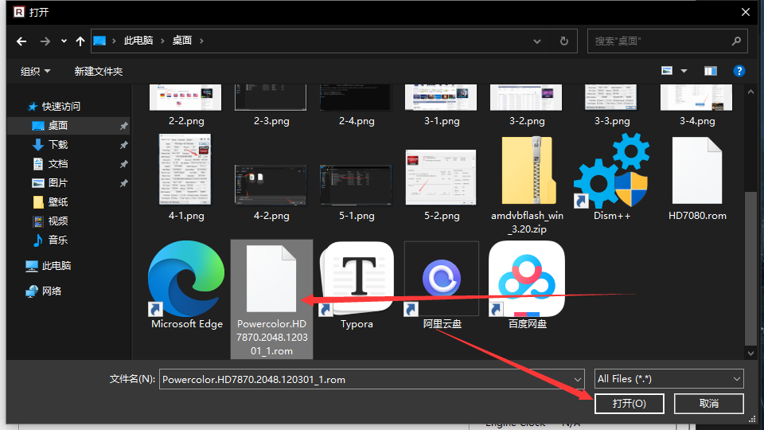
BIOS选择完成后点击【Program】开始刷入新BIOS到显卡中
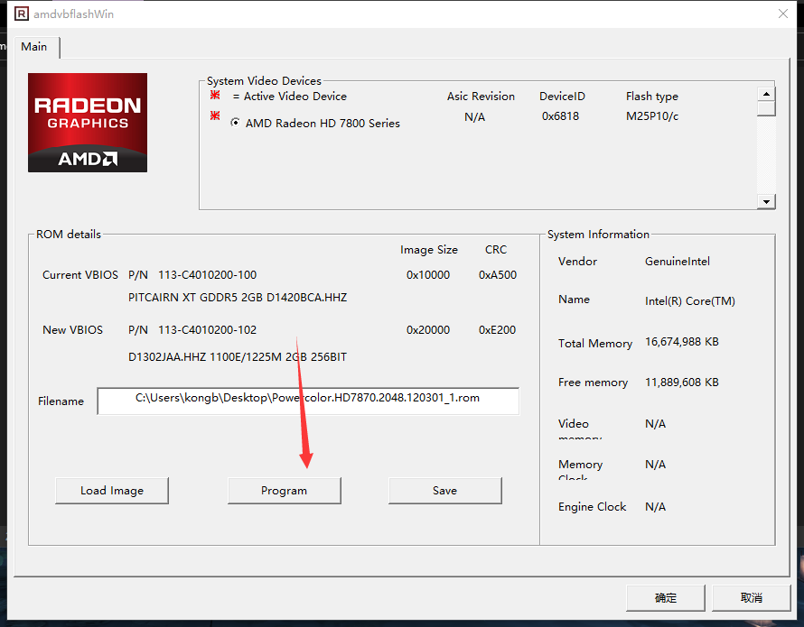
刷入完成后会让你重启电脑，这样BIOS就刷入完成了
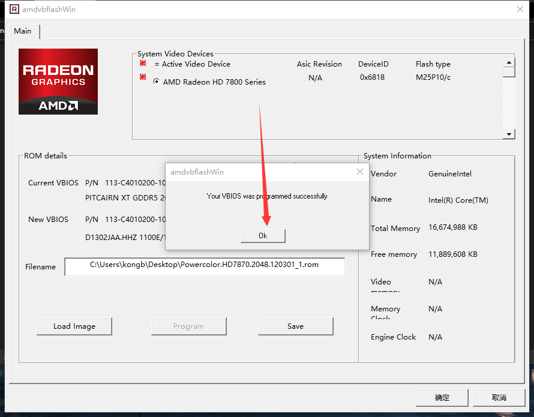
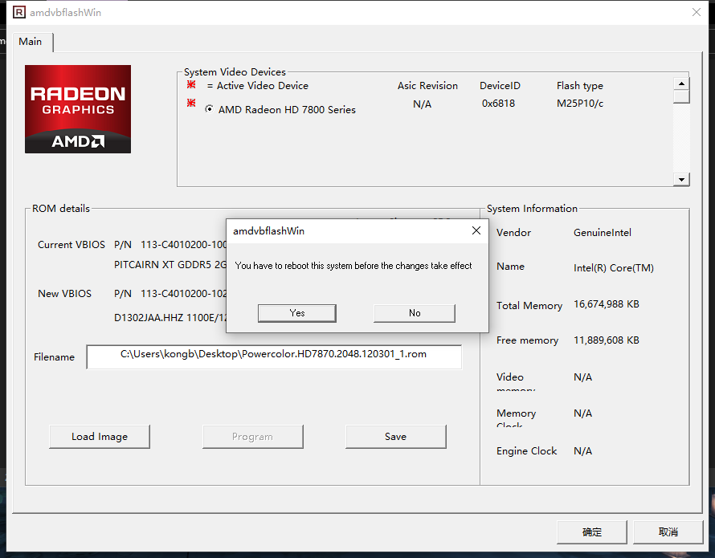
结尾彩蛋
本博客所有文章除特别声明外，均采用 CC BY-SA 4.0 协议 ，转载请注明出处！